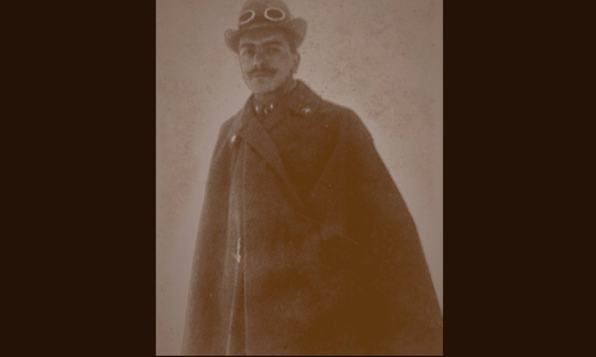

Brass

- Dati biografici
- Albero familiare
- Luoghi
- Relazioni
- Bibliografia
- Opere trattate
Italico Brass (Venezia, 1870-1943) fu un rilevante pittore di vedute e scene di vita veneziana e in questa veste partecipò a più edizioni della Biennale d’arte di Venezia che, nel 1935, ospitò una sua retrospettiva di quaranta dipinti, corredata dal catalogo con una sintetica autobiografia.
Al contempo, fu grande collezionista di pittura genovese e veneziana del Sei e Settecento. Ebbe un ruolo centrale, in particolare, nella riscoperta di Alessandro Magnasco, il cui apprezzamento contribuì a diffondere anche Oltreoceano grazie a numerose vendite.
Accanto a quella di collezionista, infatti, si dedicò all’attività di mercante, soprattutto dalla metà degli anni Venti insieme al figlio Alessandro Brass (1898-?), avvocato e vicesindaco di Venezia durante il regime fascista. Nel contesto veneziano collaborò soprattutto con Francesco e Maria Pospisil e con lo storico dell’arte Giuseppe Fiocco.
I proventi delle vendite di opere d’arte sembra fossero principalmente destinati al restauro della Scuola Vecchia della Misericordia, acquistata da Italico come atelier e sede della propria collezione, nella speranza di farne un museo pubblico.
Accanto a quella di collezionista, infatti, si dedicò all’attività di mercante, soprattutto dalla metà degli anni Venti insieme al figlio Alessandro Brass (1898-?), avvocato e vicesindaco di Venezia durante il regime fascista. Nel contesto veneziano collaborò soprattutto con Francesco e Maria Pospisil e con lo storico dell’arte Giuseppe Fiocco.
I proventi delle vendite di opere d’arte sembra fossero principalmente destinati al restauro della Scuola Vecchia della Misericordia, acquistata da Italico come atelier e sede della propria collezione, nella speranza di farne un museo pubblico.
Tra la fine degli anni Venti e l’inizio del decennio successivo vendette opere di Bernardo Strozzi, Magnasco e Giambattista Piazzetta a musei americani come il Wadsorth Atheneum di Hartford e soprattutto l’Art Museum di Cleveland. A favorire questa impresa furono soprattutto i rapporti con l’agente d’arte Harold Parson e con i mercanti newyorkesi Duveen, approfonditi grazie a un viaggio nel 1933 in cui ebbe modo di visitare alcuni dei musei e delle collezioni private più importanti degli Stati Uniti.
Tra la fine degli anni Venti e l’inizio del decennio successivo vendette opere di Bernardo Strozzi, Magnasco e Giambattista Piazzetta a musei americani come il Wadsorth Atheneum di Hartford e soprattutto l’Art Museum di Cleveland. A favorire questa impresa furono soprattutto i rapporti con l’agente d’arte Harold Parson e con i mercanti newyorkesi Duveen, approfonditi grazie a un viaggio nel 1933 in cui ebbe modo di visitare alcuni dei musei e delle collezioni private più importanti degli Stati Uniti.
Dopo la morte di Italico fino almeno alla fine degli anni Cinquanta, Alessandro continuò il commercio di opere d’arte vendendo soprattutto pezzi della collezione paterna per far fronte ai debiti. Anche il figlio di quest’ultimo, Italico Brass Jr., rimase nel settore. Nel 1974, gli eredi cedettero allo Stato italiano la Scuola Vecchia della Misericordia, oggi sede del laboratorio di restauro della Soprintendenza veneziana.
Altri antiquari:
Clienti:
Collaboratori:
- Duveen Brothers (antiquario)
- Giuseppe Fiocco (storico dell'arte)
- Harold Parson (intermediatore)
Bibliografia essenziale:
- 1935, Mostra dei quarant'anni della Biennale: 1895-1935. Venezia, maggio-luglio 1935, Venezia, Tip. C. Ferrari
- Malni Pascoletti, M. (1991), Una delle gallerie private più interessanti del mondo intero. Note su Italico Brass collezionista, In Masau Dan, pp. 43-52
- Morandotti, A. (2001), Italico Bras, pittore, conoscitore e mercante nell’età di Giuseppe Fiocco, In Orlando, pp. 241-250
- Rowlands, E.W. (2023), Here, There, and Everywhere': Harold Parsons, the Italian Market and a Letter of 1948, In Budd, Catterson, pp. 329-407
- Zorzi, E. (1934), L'arte italiana in America, In «Gazzetta di Venezia», 3 febbraio 1934
Vedi le opere transitate presso l'antiquario presenti nel catalogo della Fondazione Zeri